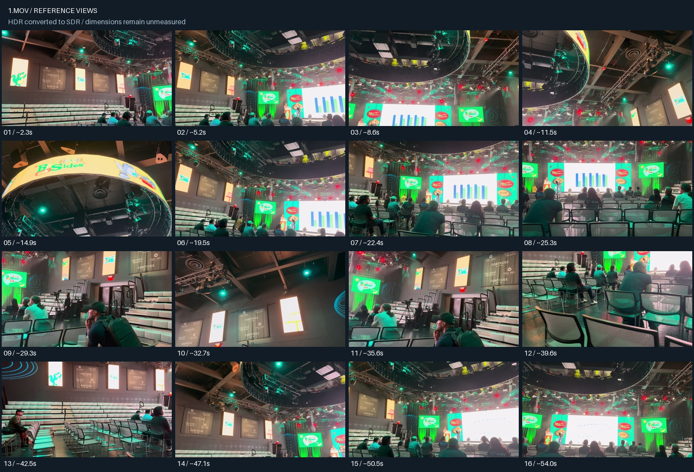
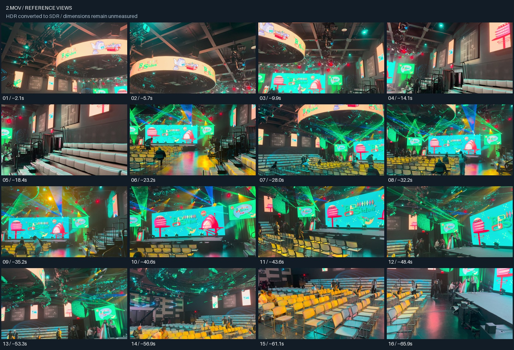
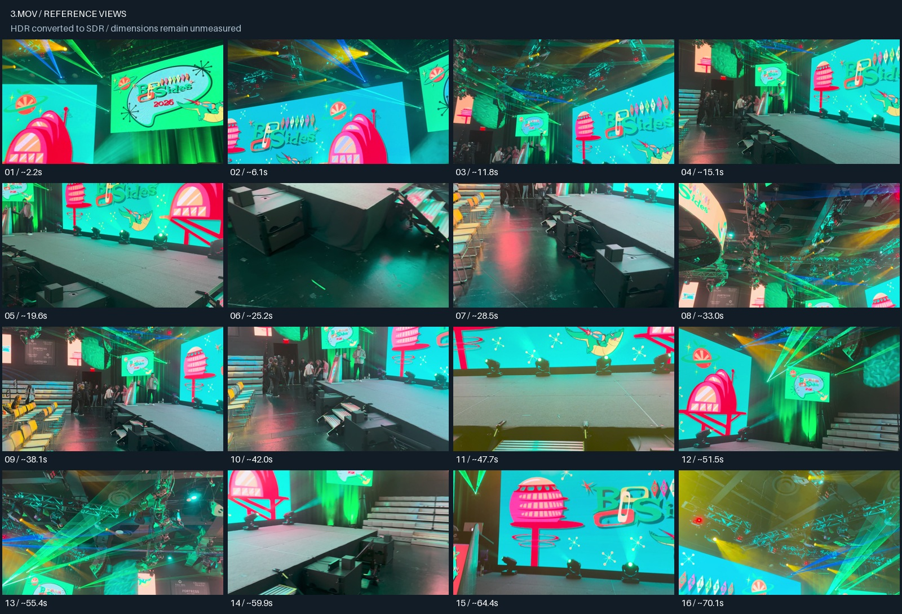

These three movies belong to one room: Open The Fortress combined review. The separate captures below are preserved as source evidence.
Processed serially with room2blender on 2026-10-02. All three movies reached the expected review_required stage. 48 selected reference images, three contact sheets and three draft room specifications are saved. Source and artifact hashes verified.
No Blender model, cutaways or USDZ have been generated: these new auditorium captures need an interpreted room specification and explicit dimensions or labeled scale estimates. Source videos remain unchanged.
Batch results and exact commands
Room, seating, side walls, ceiling rig and stage overview.
16 references · HDR converted to SDR · review_required
Draft room specification · Frame manifest · Run log

Additional aisle, tiered seating and stage approach views.
16 references · HDR converted to SDR · review_required
Draft room specification · Frame manifest · Run log

Closer stage, speaker, screen and overhead rig views. Some overhead views show ghosting/overlap and need individual review.
16 references · HDR converted to SDR · review_required
Draft room specification · Frame manifest · Run log
